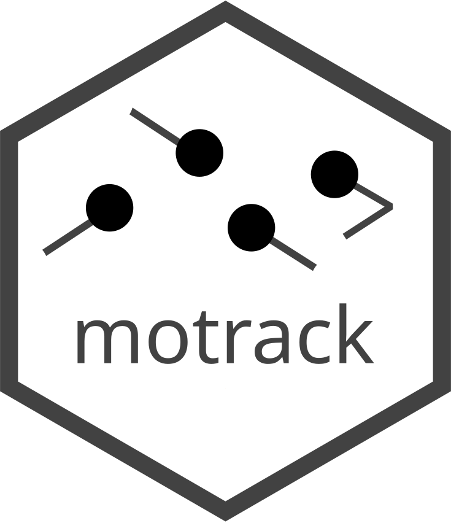

Pairwise distances between objects
distances.RdCalculates Euclidean distances between every object in p1 and every
object in p2. Pairs with the same object identifier are dropped, so
when p1 and p2 are the same tibble, an object is never paired with
itself and each pair of objects appears twice (A-B and B-A). Used, for
example, by step_grid() to detect overlapping objects.